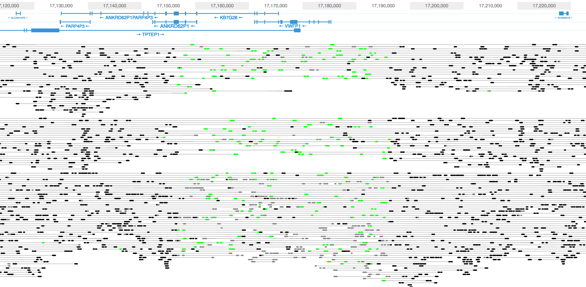

Assembling Genomes Using Large Molecule Sequencing
Shaun D Jackman
2016-06-30
Paired-end Sequencing
- 40 kbp Fosmid
- 200 kbp BAC
- 800 bp Illumina paired-end
- 6 kbp Illumina mate-pair
Large Molecule Sequencing
New Technologies
- 10x Genomics Chromium Linked Reads
- BioNano Genomics Irys
10x Genomics Chromium Linked Reads
Sitka Spruce Picea sitchensis
Sitka Spruce Mitochondrion
Aim
Assemble the Sitka spruce mitochondrion into a single scaffold* using 10x Chromium data.
* if it has a single chromosome
Method
- Align Sitka spruce reads to white spruce organelles
- Filter out mismapped nuclear reads (AS < 40)
- Identify 10x barcodes that contain at least one mitochondrial molecule
- Four properly-paired mitochondrial reads
- Select all the reads of these mitochondrial barcodes
- Assemble with ABySS
- Scaffold with ARCS and LINKS
- Fill gaps with Sealer
- Annotate genes with MAKER
- Submit to NCBI GenBank